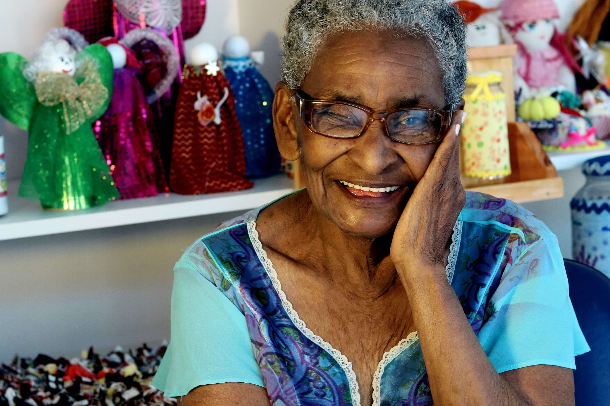
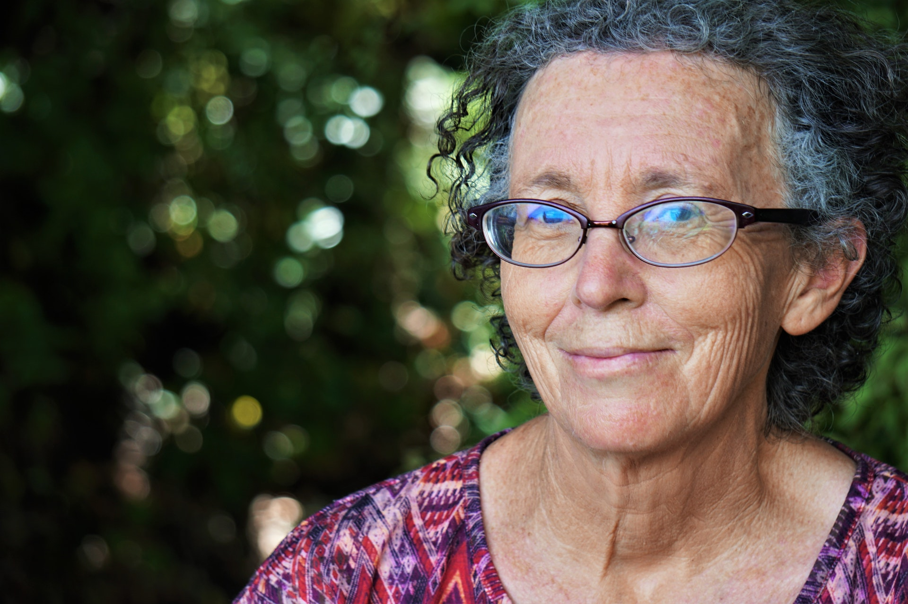

Adorable

Respectueuse

Sérviable

Le plus beau et le plus important dans ce métier c’est d’apporter du soutient moral aux personnes qui ne connaissent que la solitude. Malgré la fatigue, c’est toujours important de tenir compagnie à des personnes qui se sentent seules. Elles nous voient toujours comme un rayon de soleil
Je suis devenue professionnellement ce que je suis humainement. On nous apprend seulement les bases, les gestes qu’il faut avoir, et pourtant c’est beaucoup plus que ça, et ça devient souvent beaucoup plus qu’un métier. On m’a souvent demandée pourquoi à mon âge je travaille avec les personnes âgées et non pas dans la mode comme c’est souvent le cliché. Pour moi, il n'y a rien de plus important que d’apporter du soutient psychologique, de la chaleur humaine, de l’amour, et dans certain cas il faut beaucoup de patience de force mentale en acceptant que la personne qu’on suit s’en aille... On ne nous apprend pas tout ça, car il faut avoir des valeurs, du cœur et surtout de la patience et de l’écoute.